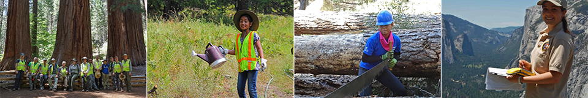

Coming to Yosemite as a volunteer, for me, was something
akin to attaining Everest. - Marva Sullivan
Not just a great valley, but a shrine to human foresight, the strength of granite, the power of glaciers, the persistence of life, and the tranquility of the High Sierra.
Yosemite has a large and vibrant volunteer program, welcoming people from all over the world into positions ranging from visitor information assistants in our visitor centers, to studying rare birds of prey, to picking up litter and building trails. In 2018 we topped over 13,000 volunteers who donated over 128,000 hours of service to the park. This is equivalent to $3.2 million in donated labor! Without volunteers, work that is critical to Yosemite could not be completed.
Volunteers at Yosemite National Park gain work experience and learn new skills, expand their knowledge about the natural environment and cultural history of the park, and preserve one of America’s greatest natural and cultural legacies for today’s visitors and future generations.
Volunteers at the park play a vital role in many aspects of park operations. They bring wonderful enthusiasm, energy, knowledge, and a diverse perspective to everything.